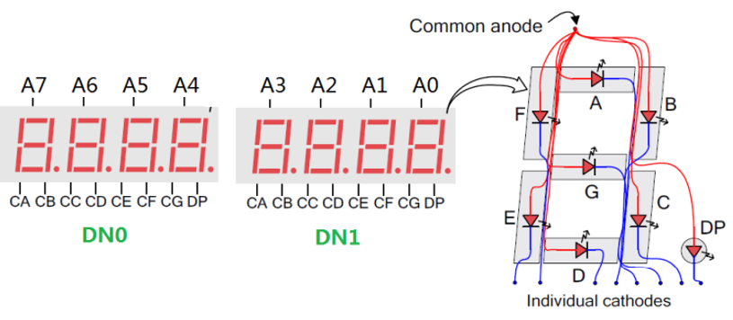
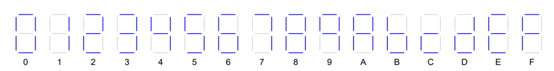
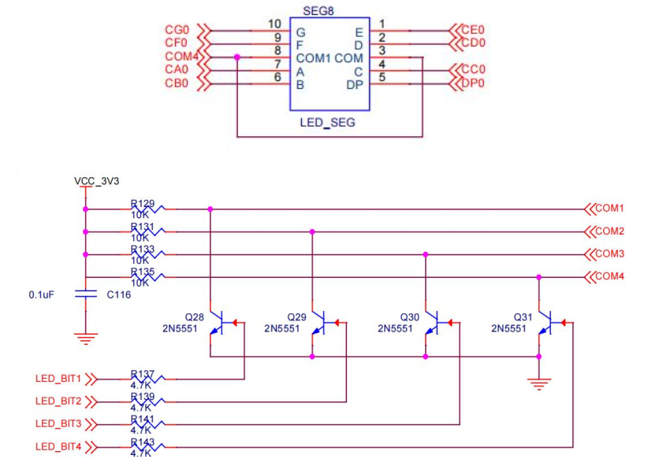
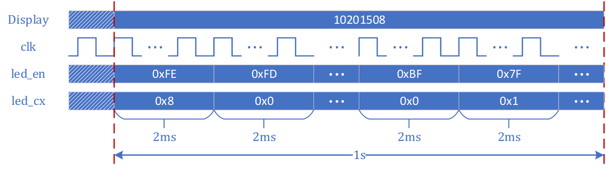
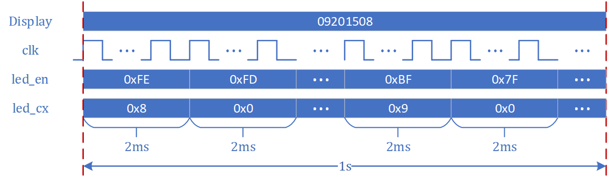
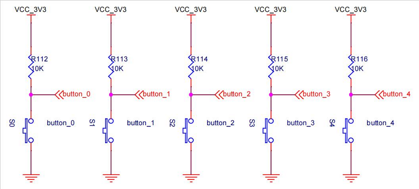
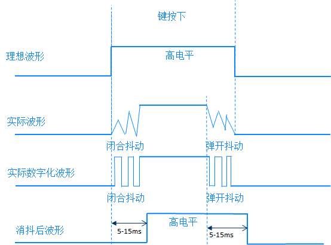

实验原理
1、数码管显示原理¶
下图以数码管中最右侧的A0数码管为例说明了 共阳极7段数码管的连接方式。
8个位中的各个相应的段及小数点分别连接到一组低电平触发的引脚上，他们被称为CA、CB、CC、…、CG、DP，其中，CA接到这8个数码管中每一个数码管A段的极（注意是8个数码管相同段的段选信号是接在一起的），CB接到这8个数码管中每一个数码管B段的负极，以此类推。

EGO2 数码管为共阴极数码管， 即公共极输入低电平。 共阴极由三极管驱动， FPGA需要提供正向信号。 同时段选端连接高电平， 数码管上的对应位置CA、CB、CC、…、CG、DP 才可以被点亮。此外，每一个数码管都有一个使能信号COM1-COM8， 只有相应数码管的使能信号为高时，对应的数码管的显示才会受到CA…CG这几个信号的驱动。
下图列出了数码管显示0到F时点亮的段。比如显示数字0的时候，除了中间的G段外其他的段都被点亮了，而数字1只点亮了B段和C段。

要想让每个数码管显示不同的数字，使能信号（COM1-COM8）和段信号（CA…CG）必须依次地被持续驱动，数码管之间的刷新速度应该足够快这样就看不出来数码管之间在闪烁。举个例子，如果想在数码管1上显示数字3而数码管2上显示数字9，可以先把 CA…CG 设置为显示数字3，并置高COM1信号，然后再把CA…CG设置为显示数字9并拉低COM1，置高COM2。
EGO2 实验板上有两个4位带小数点的七段数码管，下图显示了它们与主芯片的连接方式。 A7~A0 是8个驱动三极管，驱动信号接在A18等引脚，A18连接的最左边的数码管，依次类推CA~CG、DP段选信号接在F15等引脚，F15连接的是CA段，依次类推，使能信号和触发信号都是低电平有效。 在编写约束文件的时候需要参照此电路连接图。

管脚约束如下：
| 名称 | 原理图标号 | FPGA IO PIN |
|---|---|---|
| A0 | CA0 | F6 |
| B0 | CB0 | E6 |
| C0 | CC0 | K6 |
| D0 | CD0 | H5 |
| E0 | CE0 | H4 |
| F0 | CF0 | E7 |
| G0 | CG0 | P18 |
| DP0 | DP0 | B16 |
| A1 | CA1 | R18 |
| B1 | CB1 | F15 |
| C1 | CC1 | B14 |
| D1 | CD1 | C15 |
| E1 | CE1 | D15 |
| F1 | CF1 | H6 |
| G1 | CG1 | K16 |
| DP1 | DP1 | C14 |
| COM1 | LED_BIT1 | D12 |
| COM2 | LED_BIT2 | D13 |
| COM3 | LED_BIT3 | B13 |
| COM4 | LED_BIT4 | D10 |
| COM5 | LED_BIT5 | B9 |
| COM6 | LED_BIT6 | C9 |
| COM7 | LED_BIT7 | C10 |
| COM8 | LED_BIT8 | C11 |
2、数码管动态显示时序¶
从现象看8个数码管同时显示，实际数码管是轮询工作，每一时刻只有一个数码管在亮，类似于流水灯的实验，当流动的频率足够快，由于人眼的视觉暂留效应，就看不出闪烁了。数码管刷新速度建议设置为2ms刷新一次。
故需要很好地控制位使能A[7:0]信号，并在对应A[X]信号使能时，将CA...CG信号切换为对应所需要显示的值。下图为数码管动态显示时位控制信号和段控制信号的时序，其中，led_en表示A[7:0]，led_cx表示CA...CG。Verilog实现的电路能够实现图示的时序，就能正常控制数码管显示。


3、按键计数：边沿检测¶
按键计数的实现需要结合边沿检测和计数器，若按键S3被按下，则输入信号由低电平变化到高电平，产生一个上升沿。对于按键按下的次数统计，只要记录上升沿个数即可。
边沿检测实现原理如下：使用高频的时钟对按键产生的信号进行采样，时钟来一次记一次输入信号，并保存“上一个时钟”的信号，与当前“时钟”的采样值做对比，看是否存在 1->0（下降沿） 或者是 0->1（上升沿） 的变化，故采用两个触发器，分别保存当前时钟的信号值和上一时钟的信号值，然后根据两个寄存器的取值判断是上升沿还是下降沿。
下面是上升沿检测的核心代码，当检测到边沿时，计数条件成立，计数器变量+1即可实验边沿计数。
logic pos_edge;
logic sig_r0, sig_r1;
always_ff @(posedge clk)
begin
if(rst) sig_r0 <= 1'b0;
else sig_r0 <= signal;
end
always_ff @(posedge clk)
begin
if(rst) sig_r1 <= 1'b0;
else sig_f1 <= sig_r0;
end
assign pos_edge = ~sig_r1 & sig_r0;
4、消抖¶
EGO2开发板有6个按键开关，电路连接如下

对于实验中用的按键开关和拨码开关，属于机械部件，往往存在抖动，导致输入的信号有很多干扰，如下图所示。如果直接对输入进行计数，一次按键，将会触发多次计数，大家可以尝试无消抖的计数。

所以，对于按键输入，往往会进行消抖处理。常用的方法是计时消抖法，对产生的高电平进行时长判断，大于10ms才认为有效。也可以尝试其他方法实现。